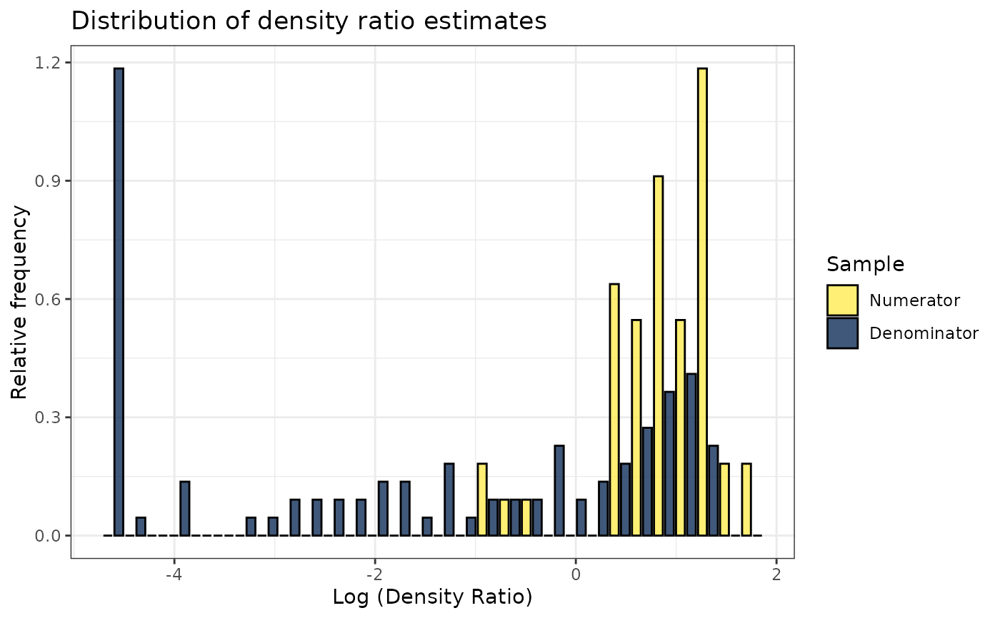
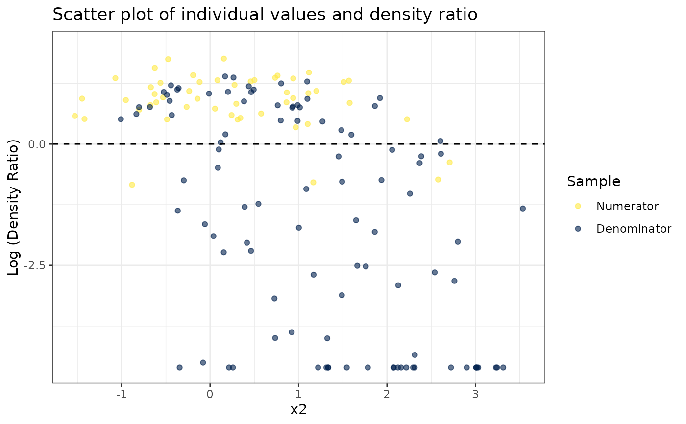
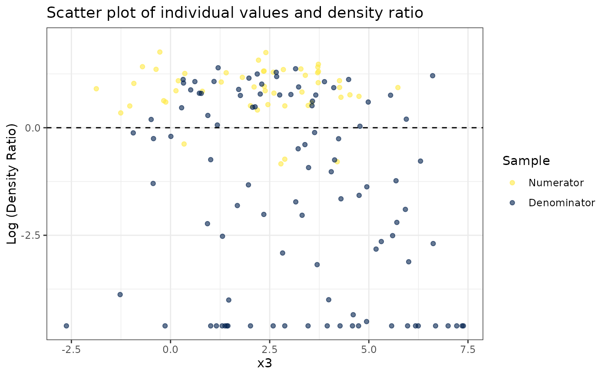
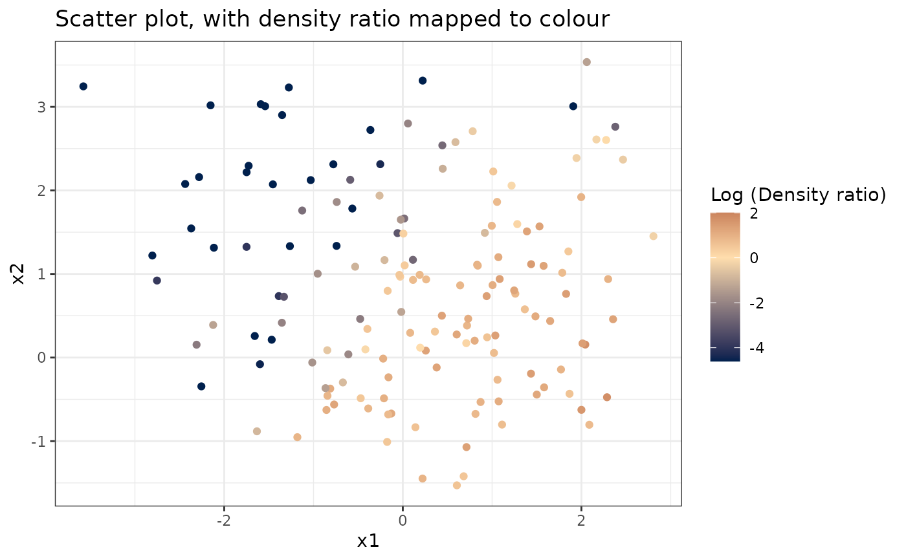
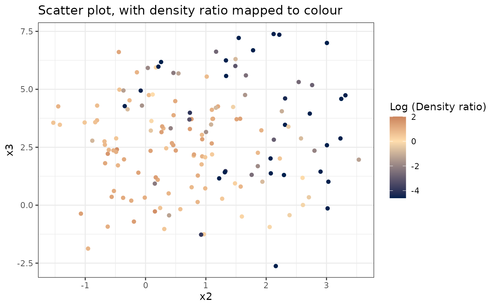

Least-squares heterodistributional subspace search
Usage
lhss(
df_numerator,
df_denominator,
m = NULL,
intercept = TRUE,
scale = "numerator",
nsigma = 10,
sigma_quantile = NULL,
sigma = NULL,
nlambda = 10,
lambda = NULL,
ncenters = 200,
centers = NULL,
maxit = 200,
progressbar = TRUE
)Arguments
- df_numerator
data.framewith exclusively numeric variables with the numerator samples- df_denominator
data.framewith exclusively numeric variables with the denominator samples (must have the same variables asdf_denominator)- m
Scalar indicating the dimensionality of the reduced subspace
- intercept
logicalIndicating whether to include an intercept term in the model. Defaults toTRUE.- scale
"numerator","denominator", orNULL, indicating whether to standardize each numeric variable according to the numerator means and standard deviations, the denominator means and standard deviations, or apply no standardization at all.- nsigma
Integer indicating the number of sigma values (bandwidth parameter of the Gaussian kernel gram matrix) to use in cross-validation.
- sigma_quantile
NULLor numeric vector with probabilities to calculate the quantiles of the distance matrix to obtain sigma values. IfNULL,nsigmavalues between0.05and0.95are used.- sigma
NULLor a scalar value to determine the bandwidth of the Gaussian kernel gram matrix. IfNULL,nsigmavalues between0.05and0.95are used.- nlambda
Integer indicating the number of
lambdavalues (regularization parameter), by default,lambdais set to10^seq(3, -3, length.out = nlambda).- lambda
NULLor numeric vector indicating the lambda values to use in cross-validation- ncenters
Maximum number of Gaussian centers in the kernel gram matrix. Defaults to all numerator samples.
- centers
Numeric matrix with the same variables as
nuanddethat are used as Gaussian centers in the kernel Gram matrix. By default, the matrixnuis used as the matrix with Gaussian centers.- maxit
Maximum number of iterations in the updating scheme.
- progressbar
Logical indicating whether or not to display a progressbar.
Value
lhss-object, containing all information to calculate the
density ratio using optimal sigma, optimal lambda and optimal weights.
References
Sugiyama, M., Yamada, M., Von Bünau, P., Suzuki, T., Kanamori, T. & Kawanabe, M. (2011). Direct density-ratio estimation with dimensionality reduction via least-squares hetero-distributional subspace search. Neural Networks, 24, 183-198. doi:10.1016/j.neunet.2010.10.005 .
Examples
set.seed(123)
# Fit model
dr <- naive(numerator_small, denominator_small)
# Inspect model object
dr
#>
#> Call:
#> naive(df_numerator = numerator_small, df_denominator = denominator_small)
#>
#> Naive density ratio
#> Number of variables: 3
#> Number of numerator samples: 50
#> Number of denominator samples: 100
#> Numerator density: num [1:50] 1.41 5.74 1.87 4.13 1.67 ...
#> Denominator density: num [1:100] 2.93 0.071 1.065 1.59 2.115 ...
#>
# Obtain summary of model object
summary(dr)
#>
#> Call:
#> naive(df_numerator = numerator_small, df_denominator = denominator_small)
#>
#> Naive density ratio estimate:
#> Number of variables:
#> Number of numerator samples: 50
#> Number of denominator samples: 100
#> Density ratio for numerator samples: num [1:50] 0.344 1.747 0.628 1.419 0.511 ...
#> Density ratio for denominator samples: num [1:100] 1.0751 -2.6454 0.0626 0.464 0.7493 ...
#>
#>
#> Squared average log density ratio difference for numerator and denominator samples (SALDRD): 13.56
#> For a two-sample homogeneity test, use 'summary(x, test = TRUE)'.
#>
# Plot model object
plot(dr)
#> Warning: Negative estimated density ratios for 25 observation(s) converted to 0.01 before applying logarithmic transformation
#> `stat_bin()` using `bins = 30`. Pick better value with `binwidth`.

# Plot density ratio for each variable individually
plot_univariate(dr)
#> Warning: Negative estimated density ratios for 25 observation(s) converted to 0.01 before applying logarithmic transformation
#> [[1]]
#>
#> [[2]]

#>
#> [[3]]

#>
# Plot density ratio for each pair of variables
plot_bivariate(dr)
#> Warning: Negative estimated density ratios for 25 observation(s) converted to 0.01 before applying logarithmic transformation
#> [[1]]

#>
#> [[2]]
#>
#> [[3]]

#>
# Predict density ratio and inspect first 6 predictions
head(predict(dr))
#> [1] 1.410607 5.739287 1.874031 4.131255 1.666760 4.095855
# Fit model with custom parameters
naive(numerator_small, denominator_small, m=2, kernel="epanechnikov")
#>
#> Call:
#> naive(df_numerator = numerator_small, df_denominator = denominator_small, m = 2, kernel = "epanechnikov")
#>
#> Naive density ratio
#> Number of variables: 3
#> Number of numerator samples: 50
#> Number of denominator samples: 100
#> Numerator density: num [1:50] 0.572 1.421 0.945 1.058 0.936 ...
#> Denominator density: num [1:100] 1.391 1.459 0.572 0.943 1.314 ...
#>